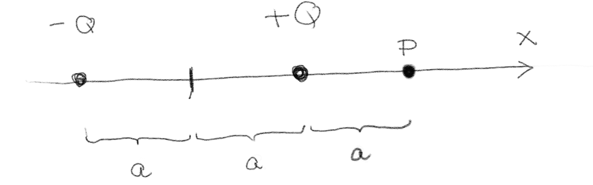
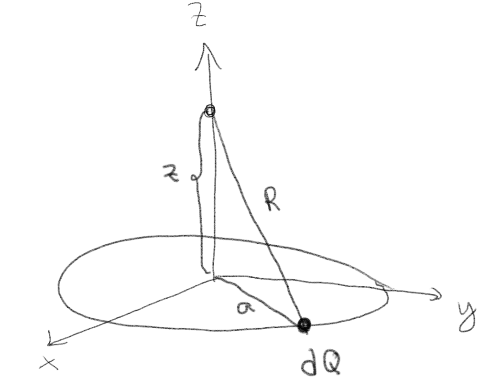

To ladninger \( Q \) og \( -Q \) er plassert på \( x \)-aksen som vist i figuren.

a) Hva er det elektriske potensialet i punktet \( P \)?
\( \frac{Q}{4 \pi \epsilon_0 a} \left( 1 - \frac{1}{3}\right) \)
Vi finner det elektriske potensialet ved superposisjonsprinsippet. Vi ser avstanden fra \( Q \) til \( P \) er \( a \) og avstanden fra \( -Q \) til punktet \( P \) er \( 3a \). Da er potensialet: $$ \begin{equation} V = V_{Q} + V_{-Q} = \frac{Q}{4 \pi \epsilon_0 a} + \frac{-Q}{4 \pi \epsilon_0 3a} = \frac{Q}{4 \pi \epsilon_0 a} \left( 1 - \frac{1}{3}\right) \; . \tag{11} \end{equation} $$
(Lærebok 2.5.2)
Figuren viser en ringladning med radius \( a \).

a) Hva er bidraget \( \d V \) til potensialet i punktet \( (0,0,z) \) fra elementet med ladning \( \d Q \) på ringen?
\( \d V = \frac{\d Q}{4 \pi \epsilon_0 \left( a^2 + z^2\right)^{1/2}} \)
Bidraget er gitt som $$ \begin{equation} \d V = \frac{\d Q}{4 \pi \epsilon_0 R} \tag{12} \end{equation} $$ hvor \( R \) i dette tilfellet er gitt av \( R^2 = a^2 + z^2 \) slik at $$ \begin{equation} \d V = \frac{\d Q}{4 \pi \epsilon_0 \left( a^2 + z^2\right)^{1/2}} \; . \tag{13} \end{equation} $$
(Lærebok 2.5.3)